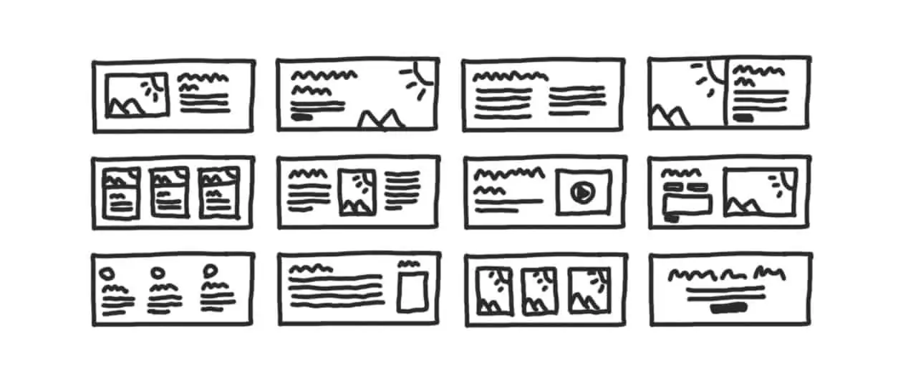
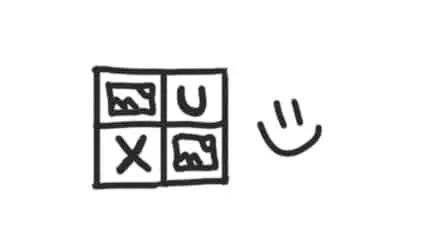
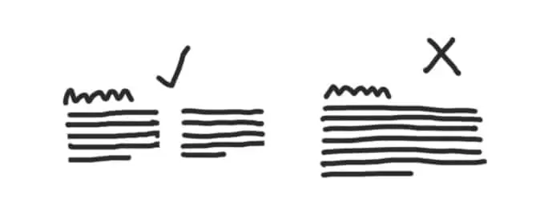
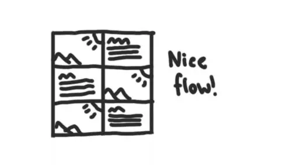
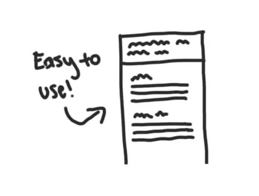
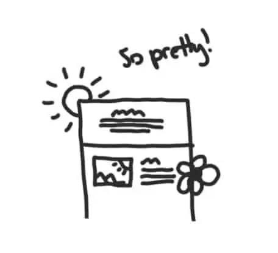
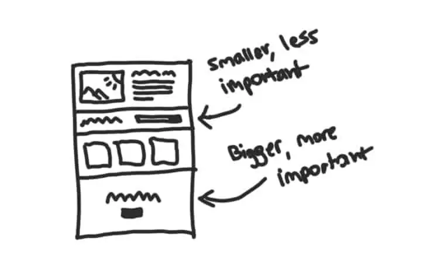
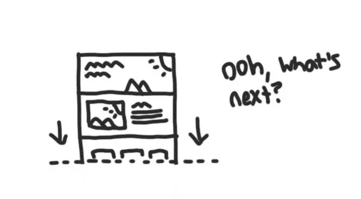

Why Is The Layout Of A Website Important?
There are many different factors to making an effective website like content, design, usability, and layout.
The layout can be particularly important because it control alot of variables that you might not be able to see at a first glance.
Let’s explore what the purpose of layouts are, why website layouts are important, and finally how to make a good one.
Why is a layout important?
Layout plays a huge role in your website’s page. Without it, your website would a wall of text and links and no one would care to read through. Layout is important because it influences many different things like:
It improves user experience?
A good layout improves user experience by creating a better, well, experience. Without a layout users can become frustrated when there’s too much content on the screen making it overwhelming and stressful, resulting in someone just leaving the website.
It makes content more readable
When you put your content into a layout (instead of just making a giant wall of text) it makes it much more readable. For most pages (unlike blog posts) content isn’t too text-dense making it able to be in a layout accompanied by images and other visual elements.
It creates smoother flowing pages
With a good layout, the content of a website flows a lot more smoothly creating a gradual informative experience. When your website flows better it creates a better reading experience for the user, promoting them to read your content a lot more.
Creates predictability and expectations
Think about the layout of this page that you’re on right now – based on the layout, when you first landed on this page it gave you the expectation that it’s a blog post. And that’s because it is! The layout of a page can be used as a tool to almost tell users what to expect and what they’re in for.
Better ease of use
A good layout just makes websites easier to use. A better user experience, content readability, flow, predictability all work together to providing easier and smoother experiences for users.
It improves the design of your pages
To put it simply, pages look better with content in a layout rather than just spitting it out on the page. In blog posts it makes sense to not have much of a layout at all, but more top-level important pages should have some sort of layout to make them stand out and make a good first impression.
It gives weight and importance to content
With layout you can make sections of a page visually more important and less important on a page. Adding this visual weight to sections allow you to control what users give their attention to.
It helps with user retention
With a layout there’s more visual interest on the page keeping users on the page. A good layout is interesting enough to keep someone’s attention but isn’t too unfamiliar enough that the content becomes hard to consume and take in.
What is the overall purpose of a layout?
The purpose of a layout is pretty simple, it’s to arrange the content on your website in a pleasing and easy to understand way to improve the user’s experience and ease of use when on your website.
A website page can usually be a collection of random things that make layouts even more important.
For example, the homepage of a website typically has sections that are unrelated that lead to other pages of your website.
Like your homepage might have:
- An about section with a blurb and button that leads to the actual about page;
- A list of some of your products/services which then lead you to the products/services page.
The About section and Products/Services section are unrelated but through layout, you can make it understandable to the user that those sections are different ideas instead of just throwing all that information to the user and expecting them to know the difference of when those sections start/stop.
A layout also helps to make your website look better overall. Instead of a giant block of boring text, with a layout you can break it up and organize it in a much more pleasant way for the visitor.
What is a good layout for a website?
A good layout for a website is one that keeps users interested in your content while not making it harder for them to consume your content.
What makes a good layout can be different based on the type of website you have. For example, a good homepage for a brick and mortar business’s website will not be good for an online e-commerce store.
Overall, good layout supports the content the users want from your website’s page. To figure out how to support your content, think about whats the most important content on the page and then order and design the layout around it.
If the content is less important for the majority of users, it should be in a layout that shows that importance to subconsciously convey that to the user.
What content you have for each page really sets the tone for what kind of layout your page visitors would want and expect to see. If you have a page about World War II and you have many paragraphs of content, your page should be information/content focused rather than flashy and so the layout would change.
If you really want to make the most out of your homepage, I wrote an article showing you (with pictures) the best homepage layout if you’re interested.